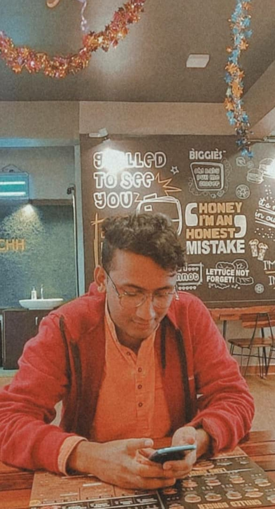

Abhigyaan is a volunteer organisation operating from BITS Pilani,
Goa campus. It comprises of a group of highly motivated students
working to help the not so privileged. Anyone and everyone
interested in helping out is encouraged to volunteer during its
events. With the active participation of the students, it has been
able to achieve great feats in the past and aims to continue with
the good work. It was back in the August of 2005 when Prof. T.C.
Goel proposed an education drive with the aim to achieve the goal of
"education for all" during his Independence Day address. Abhigyaan
was started with this motto in mind by the students under the
guidance of faculty-in-charge, Dr. Basavadatta Mitra in the same
year. During it's humble initial days, Abhigyaan was a BITS Night
School. The students taught the children of construction workers,
the mess staff, the housekeepers and the maintenance staff. A mere
total of 34 children were enrolled in its classes. Today, Abhigyaan
has come a long way with the voluntary participation of nearly 120
students of BITS Pilani, Goa campus. Members of Abhigyaan regularly
visit the neighbouring slum of Lamani to teach and to play with the
children. There are also programmes to teach children in the
evenings and the the unfortunate, like the mess workers, at night on
the campus. Various occasions like the Children's Day, the Republic
Day and the Independence Day are celebrated with the underprivileged
children. Last year, some of the volunteers also got an opportunity
to teach the children how to dance and watched them perform during
the opening ceremony of Waves'19, the annual cultural fest of
college. Besides these, campus drives, like No Food Wastage Day, are
organised regularly with an aim to reduce the overall weight of the
food wasted by the students eating in the messes.
Recent events
Donation Drive
Donation drive was an initiative conducted jointly by Nirmaan
and Abhigyaan aimed at donating notebooks and clothes to the
needy.
Republic Day 2019
On 26th Jan,Abhigyaan organised an event for the kids from
Lamani Batch, Evening Batch and the ladies from the English
Batch
Children's Day 2018
Abhigyaan celebrated Childern's Day by organising many
fun-filled games and events for the Lamani and English Batch
kids.
Cleanliness Day
Abhigyaan's initiative of Campus Cleanliness Drive on 2nd of
October 2019 saw an amazing response from students as well as
the teachers.
Photos
Our Photo Gallery
Remembering Abhigyaan
Malhar
2016
When I joined Abhigyaan, it was just a team of 50 highly
motivated people willing to give it back to the society. At
that time we had 5 different batches, inside and outside the
campus, where kids and adults came. I started teaching in
Mess Batch, where the mess workers took time from their
hectic schedule to learn a new language, or some basic
computer skills like MS office. Talking to them made me
realise that every person has his own struggle and his own
motivation to try and excel in life. Some were even trying
to clear their 12th board exams.
In my second year I was made the batch head of the evening
batch, where the kids of non academic staff came. When I
joined Evening Batch there were just 2 kids. We went to
their neighbourhood and encouraged other parents to send
their kids. Within a few days the strength was around 20.
From then the graph went upwards. Recently, a girl from the
same batch secured 90.4% in 12th CBSE board exams.
Over the years, I've seen Abhigyaan grow into a huge club
with 200 teachers and more than 100 students. Now, along
with the kids, their mothers also come to learn English and
Computers. People working in the library, cafeteria,
laundry, shopping complex, security guards have joined
Abhigyaan. Many security guards and mess workers also got
selected in the army and achieved higher ranks in their
respective jobs. Abhigyaan also teaches in the nearby slums
- Lamani and birla.
Apart from assisting in academics, Abhigyaan celebrates
various events like children's day, independence day,
Republic day where kids from nearby slums and other kids
from campus come where we teach them the importance of these
days, conducts various competitions and play games.
Abhigyaan has also started a new initiative called "No food
wastage" where they encourage people not to waste food and
for at least a week keep their plates clean. This initiative
has proved to be very effective. The daily food wastage in
messes was brought down from 300ks to 90kgs.
Abhigyaan is truly living up to their motto of "Education
for all" and I'm glad to be a part of it.
Noel Felix
2013
We can never payback our teacher and mentors, for standing
by and motivating us when we struggled, and in shaping us to
what we are.Only thing which we can do is to pay forward, by
helping others in a similar manner, and ABHIGYAAN is the
organization which helped me realise this fact and pushed me
for the same.Before ABHIGYAAN,every night when I was about
to sleep I felt a sense of emptiness about what I was doing
with my life.But the night after my first day at the
organisation,trying to teach Farhan, instead of the
emptiness, I felt that there was some kind of meaning being
added to my life and went to sleep happily.
I felt that it was alright if I die after taking an
ABHIGYAAN session that would be one of my best days in life.
I joined the Evening batch of the organisation in my third
year, and I never missed playing football in till I joined
the club.But in my evening batch session, when I see the
smile on faces of the children,I could easily give up
football.They taught me to be more creative in teaching and
in life.Looking back,I think joining ABHIGYAAN was the best
decisions in life.
Ashish
2015
I started working in Abhigyaan in my first year(2015). I was
assigned to the mess batch. And to be honest I was a little
nervous on the first day. But soon that nervousness turned
into excitement. We did a lot more than just studying, we
bonded and played games every week. Soon I started taking
substitute classes in other batches. And I realised that
teaching is totally different in every batch. Each batch has
a different age group or different background. The problems
faced are totally different in every batch. Some students
have a motivation problem in the long run, while some can't
stop running around during the class. But our constant
interaction helped a lot in keeping the morale up and the
kids also started listening to us. I have watched Abhigyaan
grow from a family of 60 to a family of 200 in my 4 years.
Abhigyaan has grown from 2-3 batches in my first year to 5-6
batches in my final year. Working in Abhigyaan opens our
eyes to the reality we never saw growing up in our homes. I
have seen mess workers coming for the classes after working
all day. I have seen some families in Lamani with around 500
rupees in their bank account. Whereas we spend more than
this on an outing or while ordering a pizza. The things we
take for granted are their once in a year celebration. So
after a while, you aren't just taking their classes because
they want to learn something. You take their classes because
you want them to learn something. You want them to succeed.
It becomes more than an Abhigyaan class. You take it upon
yourself to not let them down. Every time they succeed in
anything, like sending a whatsapp message for the first
time, you want them to take the next step. And trust me, an
extra sweet or ice cream in the mess from your student is
all you need for making you happy for the next few hours.
Apart from the official Abhigyaan activities, I have
innumerable unforgettable memories with the other members.
The bonds we create while working here are cherished by each
and every member. I wish Abhigyaan can keep growing and can
reach more people to create a lasting effect in their lives.
All the best to the current and future members. I'll keep
following the social media pages and smile everytime I see
anything about Abhigyaan.
Raghav Nyati
2012
One of my biggest joys is the fact that I didn’t bother much
about my academics or placements but followed my passion for
social service through Abhigyaan. I helped ensure that the
club’s teacher strength increased from 5 to over 20 during
my tenure as a coordinator. I continue to support the
volunteering community through my website -
VolunteerCurriculum.com. My BITS experience would not have
been half as enriching had I not worked with Abhigyaan,
weaving some of the best friendships. Whenever one visits
campus, time should be taken out to meet the Abhigyaan
teachers. You will not meet college students with a better
blend of humility, intellect and passion for social service
than the Abhigyaan teachers! I wish all the Abhigyaan
students and teachers continued success!
Namya Sharma
2013
From going to call kids from their homes behind Ch-1 in the
evening, to being the bad cop to naughty kids, from cleaning
the Abhigyaan stationery cupboard, to giving disapproving
looks to people wasting food during No Food Wastage day, and
all of these make me smile with nostalgia even today. I
started with teaching a 10th class student in the evening
batch and then later taught Chiku in the Lamani batch. The
bonds I made while in Abhigyaan are so pure, that even after
graduating, Chiku and I are regularly in While I joined
Abhigyaan it meant nothing more to me than just another
experience at BITS. But today when I look back I feel that I
can join the dots. Abhigyaan was not just another activity
at BITS, but like a turning point in my life.
Utkarsh Raj
2017
Unlike everyone whose journey starts with a club after
inductions, my journey with Abhigyaan started way before
inductions happened. It was just my second week on campus
when I first went to lamani with all the seniors for
Independence Day celebration. From just being a volunteer to
becoming the Project Lead and then finally the President, my
journey with Abhigyaan has been the most memorable and
important part of my college life. The fun and satisfaction
which I got as a first year volunteers to taking up the
responsibility of running the whole club is just something I
cannot describe in words. Almost all of the people whom I
met in my college is because of Abhigyaan and this family
not only consists of the BITsians but also each and everyone
who came to Abhigyaan for education. The happiness which I
felt after hearing the result of Anjali whom I taught was
much greater than seeing my 12th boards results. I just want
to end by saying that Abhigyaan had given me so much and
will always have a special place in my heart .
Sarthak
2015
Hi, I am Sarthak, I joined Abhigyan back in 2017 and it has
been a truly memorable experience. I used to teach Math to
Anil and Sandeep, two engineering diploma students at Goa.
It gave me immense happiness after both of them passed with
flying colors. Both of them had a wonderful attitude for
learning and were amazing human beings. I remember being
admitted to hospital once in November 2017 and Sandeep
actually came and surprise-visited me which is one thing I
would never forget. It gives me immense pleasure to say that
one of them has actually started their own teaching class. I
shall always be grateful to Abhigyan to give me this
opportunity and an experience to remember forever.
Aksnksha
2016
I am so glad that I could find such a huge bunch of people,
who were as passionate about giving back as I was. I had
always wanted to join an NGO but never got the chance to.
Abhigyaan gave me that platform. I will always remember each
and every student I taught, from mischievous kids in the
evening batch, to the curious women of the housekeeping
batch. Every lesson with them was special and I don't think
any experience would outshine what I felt when my first
student managed to recite the alphabetical order perfectly
for the first time. I'm really thankful to the team of that
time, all before it and all that came after, for creating
such a positive atmosphere in the club. I hope that
Abhigyaan keeps going strong in the times to come.
Yasif Khan
2015
Abhigyaan, it's not just a group of people, it's an
ideology. It's an idea that brings together people, empowers
people to empower the underprivileged.
A lot of my friends ask me, Why did I join Abhigyaan ??
Extracurriculars?? Soft Skills?? After 4 years, what exactly
did I gain from Abhigyaan. I tell them that the biggest
reward for me was to see the joy on the faces of the kids,
the hope on the faces of the staff workers. What else would
I need. I felt at peace knowing I had done something to make
a difference to the lives of someone.
When I joined Abhigyaan, I had just one thought in my mind.
As long as I was able to impact even a single person's life,
that would be enough for me.
Throughout my 4 years at Abhigyaan, I worked in many
batches, taught people of all age groups. It was an amazing
experience cuz while teaching them, I learnt a lot of things
from them too. Hard work, Perseverance, Being brave through
the tough times, Everyone had their own story and i was
lucky enough to be part of so many.
I have seen Abhigyaan grow from a small group of amazing
people to a huge group of even more amazing people. I'm sure
the coming batches will take Abhigyaan to even greater
heights and continue making this world a better place to
live in.
Meet Desai
2016
My experience in abhigyan was one of the best time of my
campus life. I have taught in almost all batches, and
everytime I went and taught anyone I always felt that I have
done something productive, even only if the class was just
for an hour. I enjoyed teaching in all the batches but my
favourite batch was the evening batch because the smile on
the kids face after they understand a concept is personally,
the best feeling ever. I will always be a part of abhigyan
and will always try to help anyone in need.

Sangeet
2017
I still remember the reason why I joined Abhigyaan, all my
friends were talking about this great social club and I
thought it would be better to join along with friends. I
never thought the journey which started just as a mere
source of enjoyment would turn into a big part of my college
life. I never realised how seeing the smiles of small kids
became daily part of my life.
What I found most unique about Abhigyaan was the dedication
and motivation of its members that were always trying to
create joy in other times, devoting so much of their time
into betterment of others. I was lucky to get such amazing
peers in my short period with Abhigyaan always made working
fun and were always ready to help you no matter what the
situation. Abhigyaan stands great on its values and I
believe what it is doing is very noble and anyone associated
with it should take pride over the impact they are creating
in other people’s life on a daily basis. It is always great
to see that the new people who are joining Abhigyaan are so
motivated to do more for the society.
My journey with Abhigyaan was unfortunately a small one
according to me and I will always take memories that I made
with the children, the mess workers and the other students,
my fellow club-mates and everyone that was associated with
the club. I did join the club with a small desire to make
some impact on other’s lives and I do hope that I was able
to do something for others. I joined the club with great
hopes and I hope that I’m ending my time leaving behind only
love and memories :)
Sankalp Sahu
2015
I joined Abhigyaan in my first semester of college. I
started out with an attempt to establish the guards batch,
teaching a guard on SAC duty called Rahul Bhaiya who wanted
to prepare for the SSC exams. Those late nights preparing
for it with him are amongst my fondest campus memories. I am
still in contact with him via facebook and although he has
moved on to other things in his native state of Assam, he
maintains that the learnings and challenges faced during SSC
preparation have kept him in good stead. He tells me how he
proudly tells the stories of BITS and its students to the
kids in his village. He tells them about the life changing
scope of education. And looking back perhaps this small
experience of mine is what in essence Abhigyaan means to
every Bitsian fortunate enough to be a part of it. My time
with Abhigyaan brought me face to face with a life that I
always knew existed but was never aware of the everyday
struggles it carried with itself. Over the years the
interactions with guards, mess workers and slum dwellers
gave me insights into their lives and aspirations which
fuelled me to introspect upon my own dreams and aspirations.
And Luckily I got to gain these experiences amongst some of
the most warm-hearted and dedicated bunch of people in the
form of the Abhigyaan family. Abhigyaan is an absolute
credit to the BITS community and I hope it continues to
fulfil its mission with distinction.
Manasi
2017
My Abhigyaan experience started in my first year when I was
allotted for teaching in the hostel assistants batch.
Teaching Madhuri Madam English was my first experience of
teaching an adult. While teaching her, I understood how much
difficulty a person faces due to the inability to converse
in English. Madhuri ma'am, however, was so determined to
learn that every time she met me in the hostel, she made it
a point to ask the tell her a new English word.
The evening batch of Abhigyaan is probably one of the most
fun batches to teach in. I was also lucky to get an
opportunity to teach there for nearly over 2 yrs. Laxmi was
my first student in the evening batch, who came to learn
Math and French. She was a bright student and was very
focussed. She often told me stories about her school and
friends, which made me relive my school days. Since I was
amongst the few teachers who knew Konkani, I got a chance to
teach the sister duo, Bhagyalaxmi and Vijaylaxmi. The two of
them were so sincere that they reminded me to give them some
homework at the end of every class. They always tried their
best to learn and often taught me a few words in Kanada.
Teaching in Abhigyaan has been a wholesome experience and is
something that has made a considerable part of my college
life.
Events in Abhigyaan have always been fun. Children's day
celebration is something that I looked forward to ever since
my first year. Jumping, dancing and playing games with the
kids was definitely a stress buster. Taking dance practices
for the kids from Lamani before the performance at Waves
Inauguration was an enjoyable experience. I even ended up
learning the floss dance from them. I cannot imagine my
college life without Abhigyaan and this experience is
something I will never forget.
Akhil Pratap Singh
2010
A decade before I joined the BITS PILANI Goa and one of the
most satisfying things happened in my college life was
Abhigyaan. I still miss rushing to the houses of
construction workers everyday behind CH1 hostel after 5 PM
to fetch the kids for the evening batch and many times
convincing girls’ parents to let them come with us instead
of loading them with house chores.
Abhigyaan was unique in our college in the sense that it was
neither a club nor department but rather an autonomous team
of self-motivating and passionate members making it a
family. I joined this family in 2011, my second year without
realizing much of its scope and impact. I worked with Ayush
bhaiya and Suhas bhaiya and got to learn more about the
Abhigyaan as a whole and it’s working while I was
contributing in the evening batch.
Next year, I was given the leadership role of coordinator to
take the legacy forward. I was thrilled but at the same time
was quite nervous about getting such a huge responsibility.
For the first time in my life, I was going to do something
which would impact somebody else’s life too. That thought
set deep in my mind and was the source of motivation
throughout. In addition to assuming an administration role,
I was well aware that the task would need very
well-coordinated team efforts. I was quite fortunate to get
very supportive, active, and super cool colleagues as
Harshali, Raghav bhaiya, Shreya, Bhavya, Jatin, Nishant,
Chirag, and Manchu(Aditya, if I’m correct :P).
Over the course of the next two years(2012-2013), we
stressed hard on expanding our reach and making sure that no
one is left uncovered on the campus. Our motto of “Education
for all” was well absorbed by juniors whose effect I could
see by myself. I was supported by a fantastic team of
juniors in the evening batch and all across Abhigyaan in
general. We made sure that we won’t just be teachers but
also mentors and friends who would help develop students’
personalities in total. We started a new night batch in the
Institute Cafeteria and a batch for women security guards in
girls’ hostels along with pre-existing batches: Evening
batch for kids, Night batch for mess workers and security
guards, CC batch to teach computers. I tried hard to go
outside the campus but faced many challenges so we got one
student Anil, who would come to the campus to study. But now
I’m elated to know that we have indeed expanded outside the
campus as well.
Apart from expansion, I also focussed on making Abhigyaan a
brand on its own and not to be confused by Nirmaan among
BITSians so they could get more aware of Abhigyaan and its
working. Keeping that in mind we organized the logo
competition in 2013 which was won by Arnab Nandy and that’s
how our logo came into existence. ;) Also, we had organized
numerous fun events and discussions for everyone at the
campus so we could expand our reach, get noticed, and at the
same time ensure that our students participated in those
events to get exposure and have fun.
Abhigyaan family kept evolving and making all members
contribute in any way possible. Not to forget, we also had
some nice faculty members to lend out the support when
needed.
Since I’m writing after so long, lots of memories are
pouring in but just to make it readable, I’ll try to wind up
and maybe would share more sometime later.
I congratulate all current members for putting hard work and
continuing the awesome work. I feel fortunate and proud to
be associated with this family and to be a branch of this
ever-growing tree which has already completed 15 good years.
Lastly, I wanna say, Abhigyaan gave me the first opportunity
to look outside my privileged bubble into the real world.
Students
Anjali
Anjali is a recent 12th graduate from our Evening Batch. she
has been a regular student for many years. Abhigyaan wishes
her success for all her future endeavours.
"I never really thought I would connect with abhigyaan
students so well. I left my tuitions because I was scoring
below average in 11th grade. My main concern was basically
physics. After joining abhigyaan in January, I was abe to
understand most of the concepts of physics and also
chemistry. 12th grade, I was actually nervous chemistry
because organic; but Utkarsh bhaiya made everything so much
easier to understand and trust me, I used to hate physical
chemistry but now, not much. Malhar bhaiya and Abhinav
bhaiya thought me physics and made the derivations the
easiest. Thanks to gourav for telling me about muscular pigs
to explain about Biopiracy. I'm actually really glad that I
joined abhigyaan because I really don't think I would have
scored 90. I'd really like to thank abhigyaan for working on
me so much."
Avinaash
Avinash held down a full time job in the mobile shop next to
Malakars while also trying to prepare for his 12th Maths
Supplementary exam. With the help of our volunteers, he was
able to clear this exam and finally complete his 12th grade.
Abhigyaan wishes him success in all his future endeavours.
"Abhigyaan volunteers kept me motivated and encouraged me to
keep on studying for the exams. I would especially like to
thank Khizir, Karan and Pawan for working with me and
clearing my doubts. It's because of you all that I was able
to clear the exam this time."